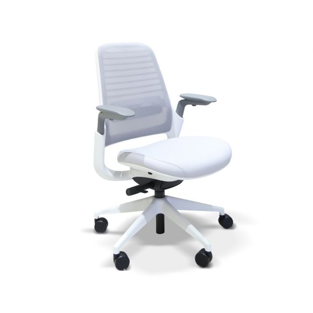
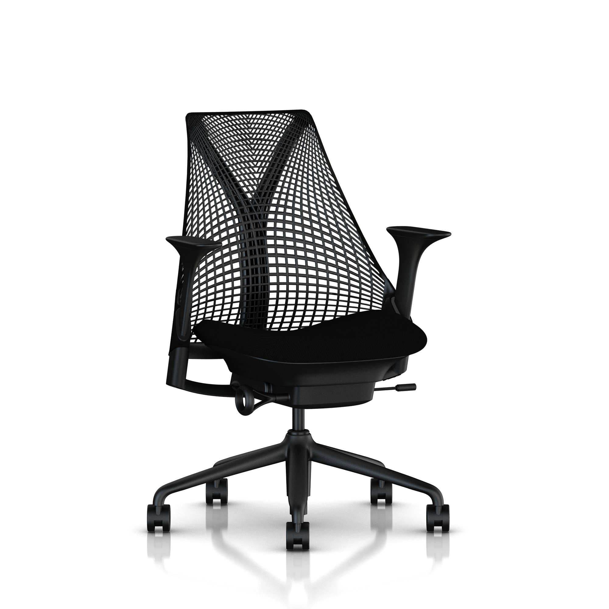
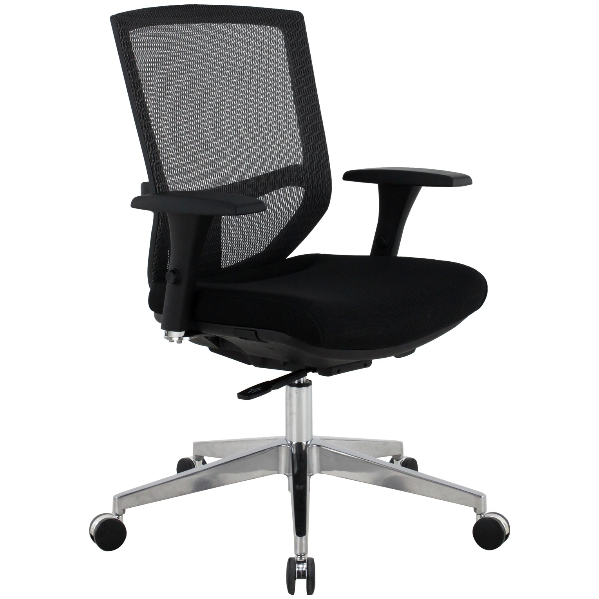

Best Office Chairs Under $200
Discover the top 10 ergonomic office chairs that won't destroy your budget. I've tested over 50 chairs to find the perfect balance of comfort, durability, and affordability.
Most "ergonomic" chairs under $200 are just regular chairs with marketing buzzwords. Real ergonomic design is based on medical research about human anatomy and workplace injury prevention.
Here's what separates real ergonomic chairs from fake ones:
| Feature | Real Ergonomic Chair | Fake "Ergonomic" Chair |
|---|---|---|
| Lumbar Support | Adjustable curve that pushes into lower back | Slight curve in backrest or loose pillow |
| Seat Pan | Waterfall edge, proper depth for leg length | Hard edge that cuts into back of knees |
| Armrests | Height, width, angle adjustable | Fixed height or height-only adjustment |
| Backrest | Follows natural spine curve, breathable | Straight back or wrong curve shape |
| Materials | Breathable mesh or high-quality fabric | Cheap foam that compresses quickly |

This is what happens when a company that makes $1,200 ergonomic chairs creates a "budget" version. Every adjustment feels precise, and the ergonomics are based on decades of workplace research.
Medical-Grade Features:
Health Benefits I Noticed:
The Trade-offs:
Best For: Anyone serious about ergonomics who wants proven design from a medical furniture company.
Steelcase Direct: $477 (takes 7 days to ship)
Amazon: $449 (Free shipping)
Best Deal: Amazon ($449, warranty & Free shipping)

Herman Miller's "entry-level" chair still costs more than most people's entire desk setup. But it's the cheapest way to get genuine Herman Miller ergonomics.
What Makes It Special:
Health Impact:
Reality Check:
Best For: People who want the Herman Miller name and proven ergonomics in a smaller package.

Hon makes furniture for Fortune 500 companies. This is their budget ergonomic chair, and it shows what proper design can accomplish at a lower price point.
Ergonomic Highlights:
Health Benefits:
The Downsides:
Best For: People who want maximum adjustability and don't mind paying for premium features.
The best ergonomics you can get for under $200. Not perfect, but addresses the main pain points of budget chairs.
Key Features:
Solid ergonomics without premium price. Good for people who want better than basic but can't afford $300+ chairs.
What Works:
Even the best ergonomic chair won't help if it's adjusted wrong. Here's how to set up any chair for maximum health benefits:
Best Options: Steelcase Series 1, Herman Miller Sayl
Key Features: Strong lumbar support, good recline, quality materials
Avoid: Gaming chairs, chairs without lumbar adjustment
Best Options: Hon Exposure (adjustable armrests), SIHOO M18
Key Features: 4D armrests, headrest support, proper monitor height
Avoid: Fixed armrests, chairs that force hunched posture
Best Options: Chairs with waterfall seat edge, seat depth adjustment
Key Features: Soft seat edge, proper seat depth, good circulation
Avoid: Hard seat edges, bucket seats, too-deep seats
Best Options: Full mesh chairs (Hon Exposure, SIHOO M18)
Key Features: Breathable materials, air circulation
Avoid: Leather chairs, solid foam backs
Ergonomic chairs are investments in your health. Proper maintenance keeps them working effectively:
If you work 6+ hours daily, yes. The health costs of a poor chair (back pain, physical therapy, lost productivity) far exceed the price of a good ergonomic chair. Think of it as health insurance.
Good ones last 7-12 years with daily use. Cheap "ergonomic" chairs last 1-3 years. The per-year cost of quality chairs is often lower than replacing cheap ones.
It can help significantly, but it's not a cure-all. Combine a good chair with regular movement, proper monitor height, and addressing underlying health issues. If pain persists, see a healthcare professional.
Executive chairs prioritize appearance and luxury materials. Ergonomic chairs prioritize health and proper body support. Many executive chairs have poor ergonomics despite high prices.
Best Overall: Steelcase Series 1 ($195) - Proven ergonomics from medical furniture company
Premium Pick: Herman Miller Sayl ($295) - If you want the best brand name and engineering
Budget Choice: SIHOO M18 ($189) - Real adjustable lumbar support under $200
Maximum Features: Hon Exposure ($179) - Most adjustability for the money
Remember: The best ergonomic chair is one you'll adjust properly and use consistently.
Discover the top 10 ergonomic office chairs that won't destroy your budget. I've tested over 50 chairs to find the perfect balance of comfort, durability, and affordability.

Transform any space into a productivity powerhouse. Complete guide to choosing the right desk, monitor setup, and accessories for maximum efficiency.

Proper lighting can make or break your workday. Learn the science behind productive lighting and get my exact recommendations for every budget.
Living in a studio or sharing space? I'll show you how to create a professional office setup in just 25 square feet without compromising on functionality.
Poor ergonomics cost you thousands in medical bills and lost productivity. Learn the exact positioning and equipment that keeps your body healthy during long work days.
Not sure how much to spend on each component? Use my interactive calculator to optimize your budget allocation and get the most value for your money.